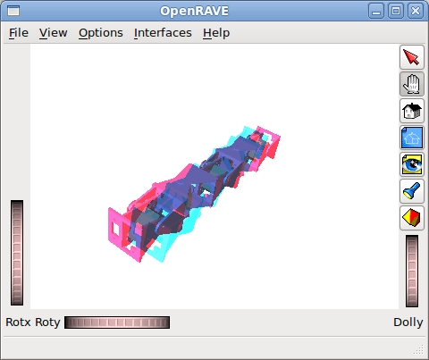
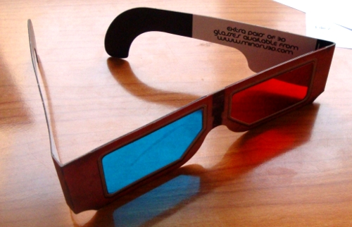

El otro día, mientras trasteaba con OpenRave, descubrí que tiene una opción para visualizar en 3D. Se lo enseñé a Juan G. Víctores y salió disparado a conseguir unas gafas 3D. Estuvimos haciendo pruebas y …. ¡Se veía en 3D!
Para visualizarlo hay que emplear las típicas gafas 3D con los colores rojo y azul:

He subido un vídeo a youtube donde muestro cómo se activa la visualización 3D. El vídeo ha perdido calidad por lo que no se ve del todo bien en 3D. Si lo probáis con el OpenRave directamente se ve mucho mejor.